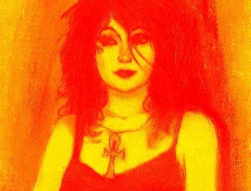
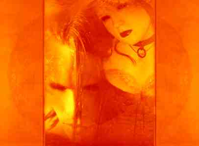
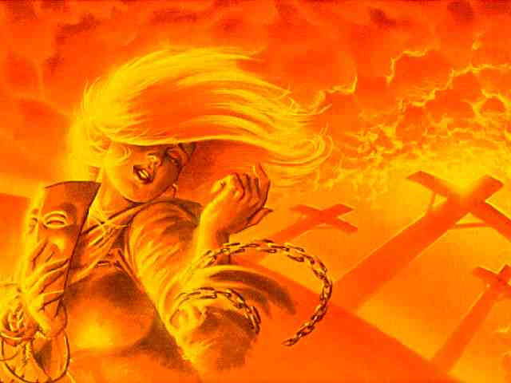

Permitam-me divagar um pouco sobre a loucura.Já acompanhei esta questão algumas vezes.
Vi pessoas saindo da realidade convencionada.
O que caracteriza-se por loucura a meu ver é a perda da capacidade de retornar a estes paradigmas usuais, de integrar neste contexto que vivemos as descobertas dos estados mais amplos de consciência.
A sua colocação de liberdade como critério é interessante e real. Dharmicamente a loucura estaria na nossa crença no ilusório, na nossa tentativa de nos apegarmos ao mundo e as situações do mundo dando-lhe uma continuidade que na realidade não possui.
Me parece que a percepção da impermanência de tudo é um dos batentes da porta do despertar e o apego a qualquer coisa um dos grilhões mais fortes. Essa falta de liberdade é algo inquietante, profundo.
Trabalho com vários projetos educacionais e a idéia piagetiana que educar é fornecer subsídios para permitir ao ser tornar-se moral e intelectualmente autônomo fica terapêutica dentro dessa abordagem.
Um ser moral e intelectualmente autônomo é então um ser saudável? Alguém um dia me falou a respeito da colocação de certo lama sobre o equívoco de se confundir a mera loucura com algum tipo de iluminação. Creio que esta confusão vem do fato que ambos, o louco e o iluminado, deixaram os limites que lhes foram impostos enquanto entes perceptivos, isto é , ambos conseguiram ir além dos limites perceptivos que lhes foram impostos pelo sistema. A diferença que o louco afundou, apenas saiu desse espectro perceptivo e sem controle algum está a vagar por sensações e percepções confusas não integradas de outros mundos, enquanto o que desperta para a luz consegue de fato ampliar a percepção da realidade, integrando sua experiência num todo complexo, que parecerá por vezes desconexo a quem observa a partir dos paradigmas ainda limitados do que chamamos realidade.
Assim concordo que a semelhança entre a loucura e a iluminação é só aparente, por tratarem-se de estados onde a cognição opera fora das faixas convencionais, mas enquanto na loucura há uma imersão não integrada na totalidade, na iluminação há o atingir de um estado.

Opinião pessoal:
Fora do silêncio, estamos sempre na "falação", tão contaminada de preconceitos, condicionamentos, etc... etc... etc... que a verdade só poderia aparecer nesta lista na forma de computadores desligados, sem mensagens.
Mas dentro dessa "falação", talvez compense dirigir um pouco nossa atenção aos arquétipos místicos, se tentarmos juntar os pedaços, expor claramente que tipo de representação arquetípica o ataman, atma men, anataman, buda, isso ou aquilo, Nossa Senhora da Aparecida, etc... etc... etc... representam.
No fundo, do que se trata?
O que nos une é a pergunta mais difícil de responder, parece que preferimos enfocar as diferenças óbvias que nos distinguem.
Certa professora titular de cadeira de biologia na USP comentava que, vez por outra, obriga pesquisadores briguentos a usarem modelos matemáticos universais ao exporem suas teorias, em especial quando há claras divergências. Diz a mesma que é muito engraçado verificar depois dessa transposição que a briga acadêmica de meses termina quando os beligerantes (que chique...) percebem que estavam falando a mesma coisa...
Devemos avaliar com profundidade a qualidade dos termos que estamos usando e os sentidos efetivos que queremos dar, para evitar esses comuns mal entendidos.

Uma sugestão:
Existem dificuldades emocionais com pessoas que se dispõe a realizar meditação. Digo melhor, existem contra indicações, existem vivências perigosas. ]
Gostaria de ouvir dos leitores se já tiveram experiência pessoal com pessoas que de algum modo "pioraram" ou "não toleraram" a meditação.
Este tema é interessante e já tive oportunidade de trabalhar muito com ele.
Todos os trabalhos mais sérios que conheço na linha de auto desenvolvimento começam por uma reestruturação da psiquê.
Quando alguém se aproxima de um desses caminhos embasados para o auto conhecimento noto que a escola procurada sempre expõe o (a) neofito(a) a um processo de reavaliação da própria vida e de como está agindo.
Paralelo a isso acontece sempre um trabalho de equilíbrio orgânico e psicológico. Certos exercícios, que noto enfatizarem o equilíbrio nas glândulas endócrinas e uma reavaliação muito similar a proporcionada por uma boa terapia são comuns a vários caminhos que estudei.
Daí que a pessoa só vai ser levada a lidar com estados alterados de consciência quando estas fases preliminares forem de fato trabalhadas. Ai entra a questão. Meditar. Encarando meditar como ampliar a sensibilidade ao aqui e agora não creio que existam contraindicações.
Toda e qualquer psicopatia é antes de mais nada uma interpretação desequilibrada da relação com o aqui e agora. Concorda?
Assim levar o ser a perceber melhor sua relação com o momento pode ter um valor terapêutico imenso. Assim como um organismo doente não pode se alimentar de qualquer coisa como faria um corpo saudável, tendo que se submeter a uma dieta adequada ao tipo de enfermidade que padece e ao tipo de tratamento que está tendo, creio que uma psique muito desequilibrada também pode ser mais instabilizada por certas práticas, que a outros seriam no máximo inócuas.
Estudando a alquimia dos sufis aprendi que temos 3 tipos de alimento , o ar, o alimento sólido/líquido e as impressões.
O ar e os alimentos são óbvios, o que poucos percebem é que tudo que recebemos pelos 5 sentidos nos alimentam também. Esse triângulo de nutrição precisa ser mantido bem equilibrado. Qualquer alteração na qualidade e/ou quantidade de um dos 3 tem que ser compensada. Paanayamas, exercícios respiratórios alteram a entrada do ar em nosso corpo. Realiza-los sem a orientação de um expert é perigoso e pode ser danoso a saúde e ao equilíbrio. Alterar a qualidade das impressões também causa mudanças efetivas na nossa "química" corporal. Creio que a meditação atua diretamente aí, portanto ela pode de fato causar problemas a praticantes já com quadro anterior de desequilíbrio psicológico.
Entretanto sempre que aplicada por alguém experiente acredito ser antes um caminho de cura do que de desequilíbrio.Paz Profunda!!!

Nuvem que passa
Conheça o
IMAGICKLAN
A Irmandade das Estrelas
O local onde os bruxos conspiram...
Clicke aqui para receber informações
Volta Índice da Tribo 
Volta Themas Mágickos

Instituto de Pesquisas Psíquicas Imagick
tel: 0xx.11.813.4123